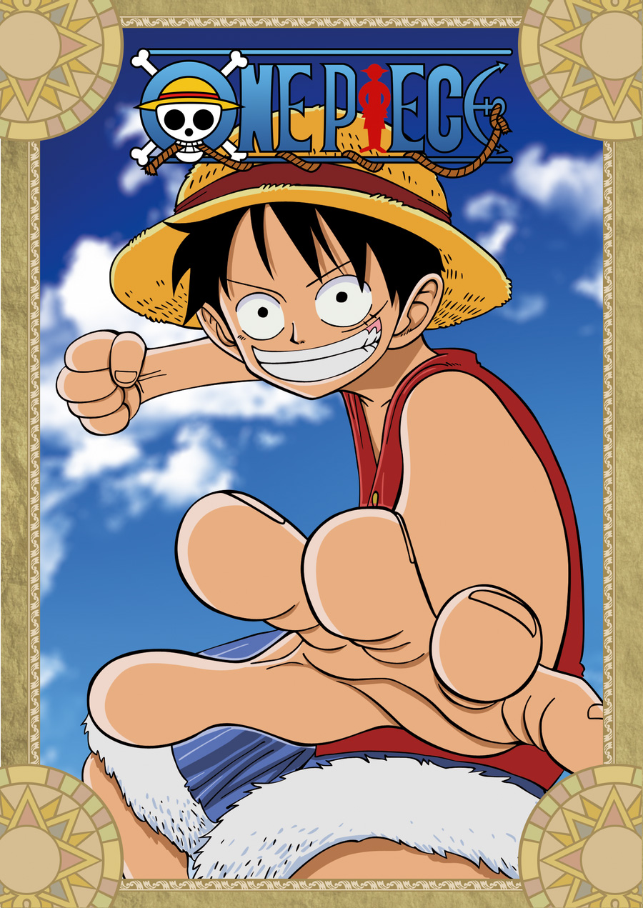
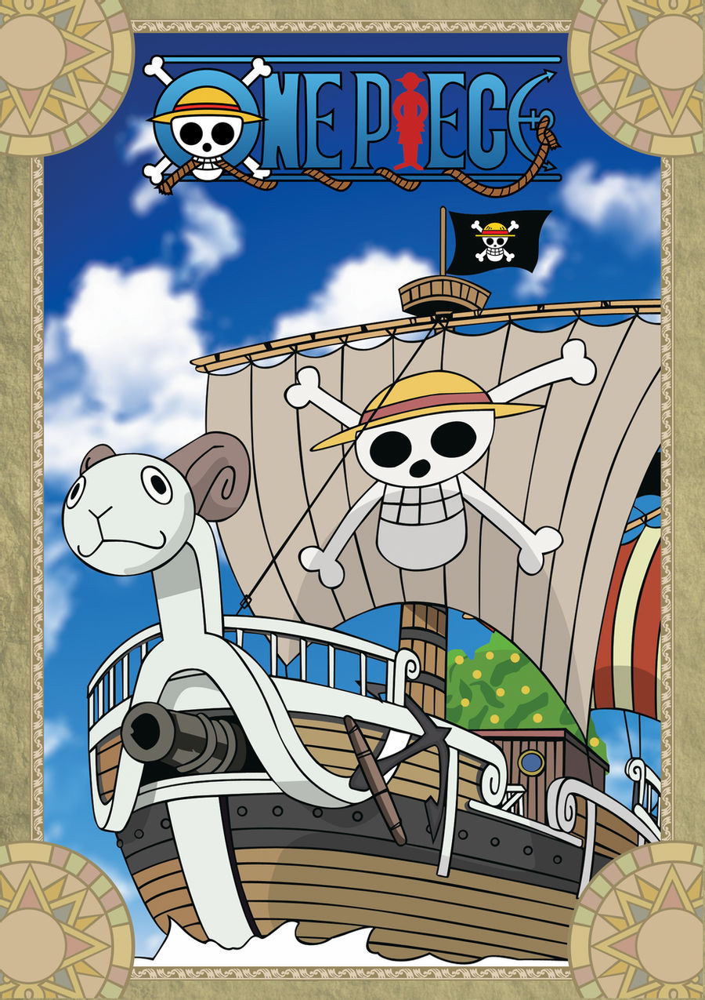
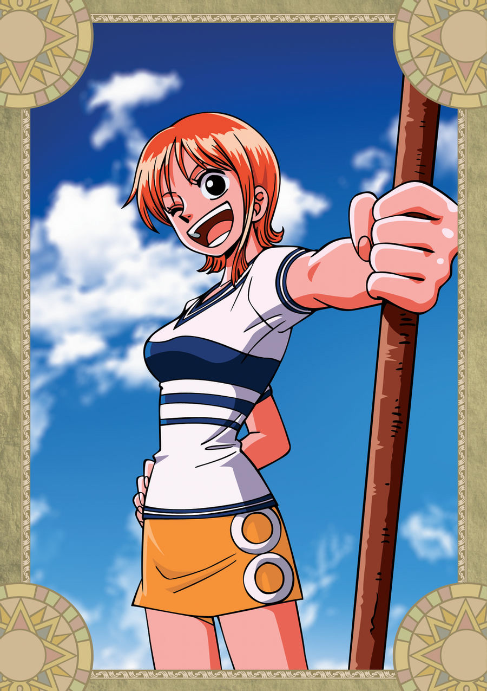
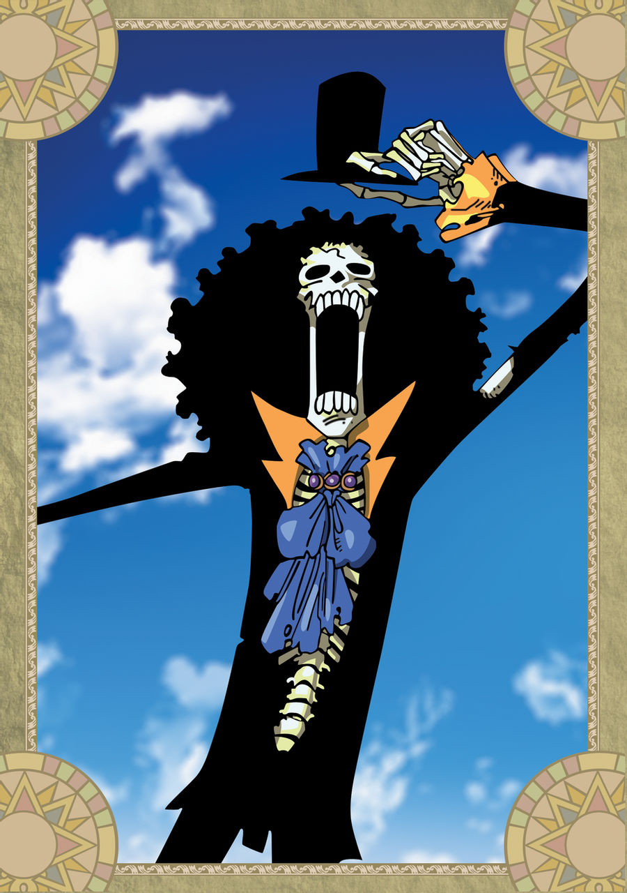
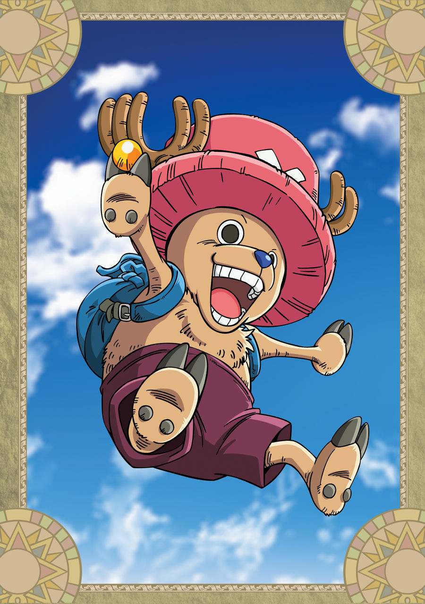
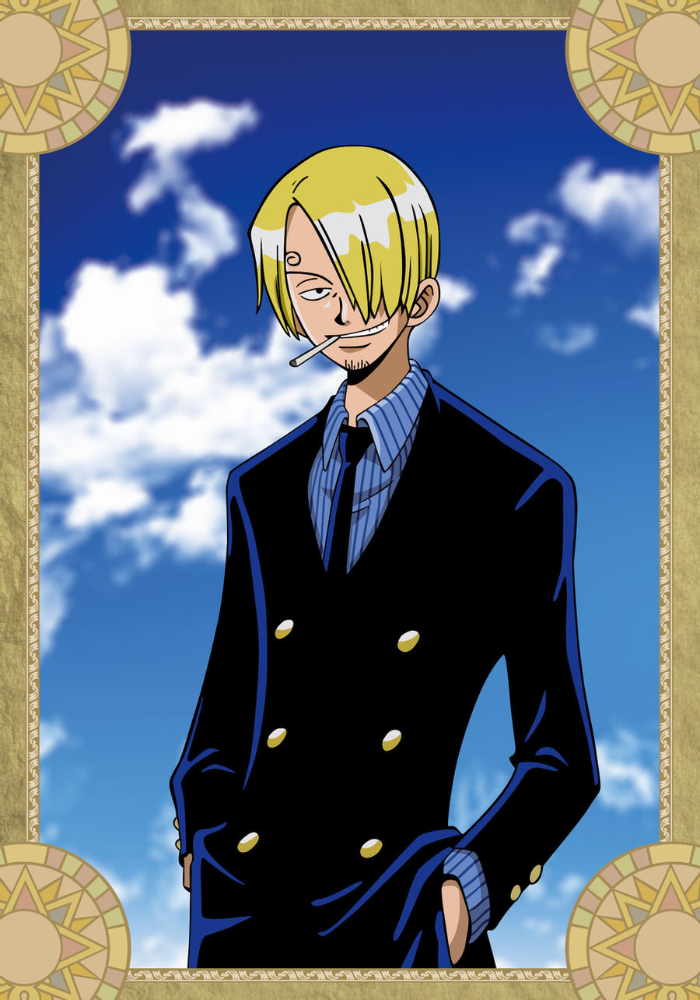
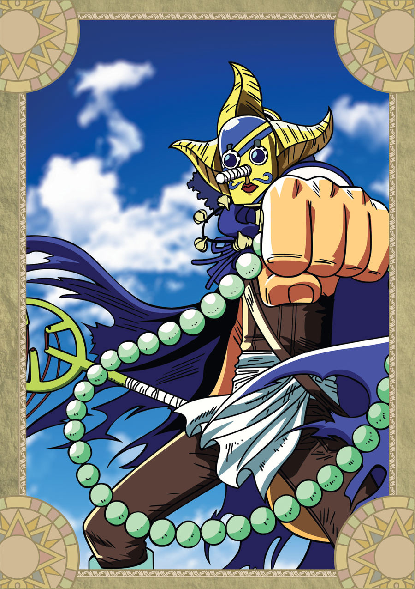
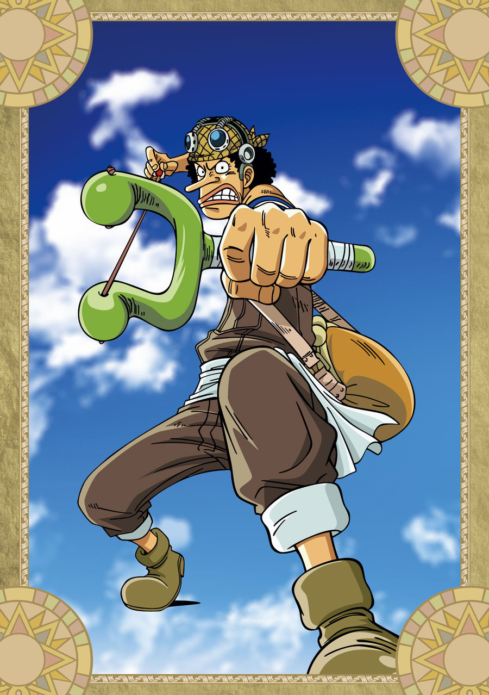
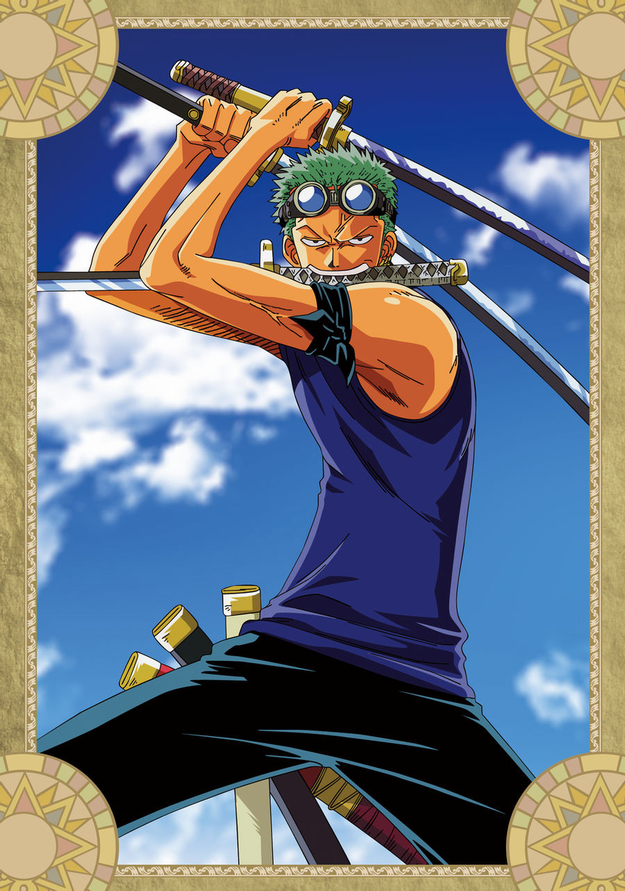
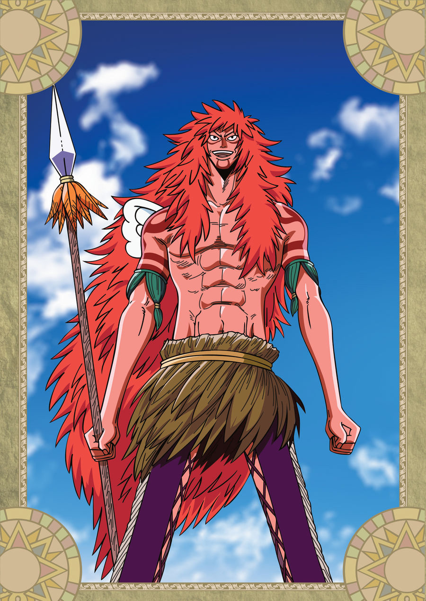

“Decidi ser el Rey Pirata. No me importa si muero por ello”

Trata de:
La historia de un chico llamado Monkey D. Luffy quien, cuando tenía 7 años, comió accidentalmente una Fruta del Diablo, convirtiéndose en un hombre de goma aunque al precio de hacerle incapaz de nadar.
Luffy, inspirado por el pirata Shanks "Akagami", sale al mar diez años después para convertirse en el Rey de los Piratas. Para ello necesitaría encontrar una tripulación adecuada, diez personas que lo acompañarían en su aventura. Dicho título honorífico nacería con la leyenda del pirata Gol D. Roger, conocido junto a su tripulación como los únicos capaces de la hazaña de recorrer por completo la Grand Line 22 años antes del inicio del viaje de Luffy.
PERSONAJES CONOCIDOS EN EL MUNDO DE ONE PIECE

Monkey D. Luffy

Vogue Merry

Nami

Brook

Chopper

Sanji

Sogeking

Usopp

Zoro

Calgara
SAGAS Y ARCOS DE TODO ONE PIECE
Saga de Water 7
Saga de Arabasta
Saga de la Alianza Pirata
Saga del East Blue
Saga de los Cuatro Emperadores
Saga de la Guerra de Marineford
Capítulos especiales históricos